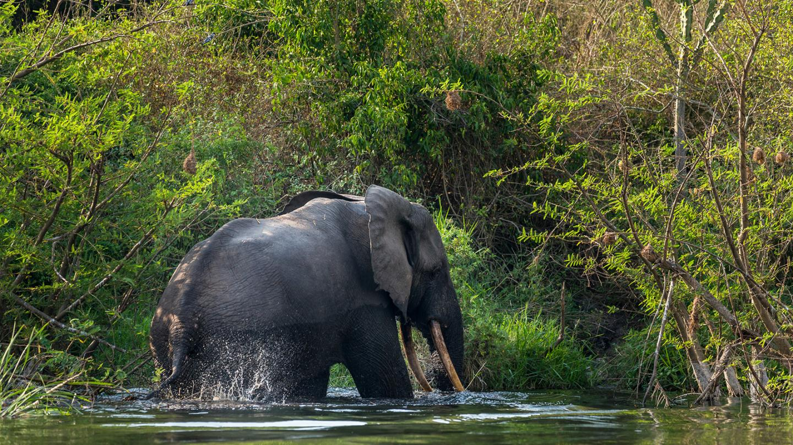
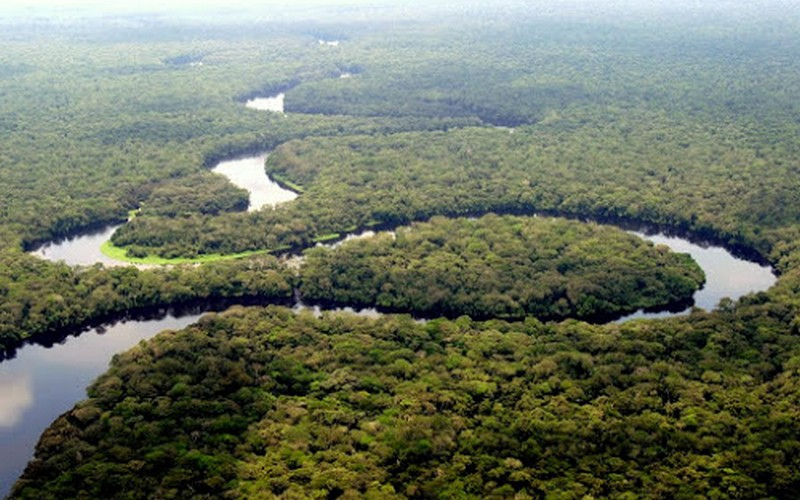
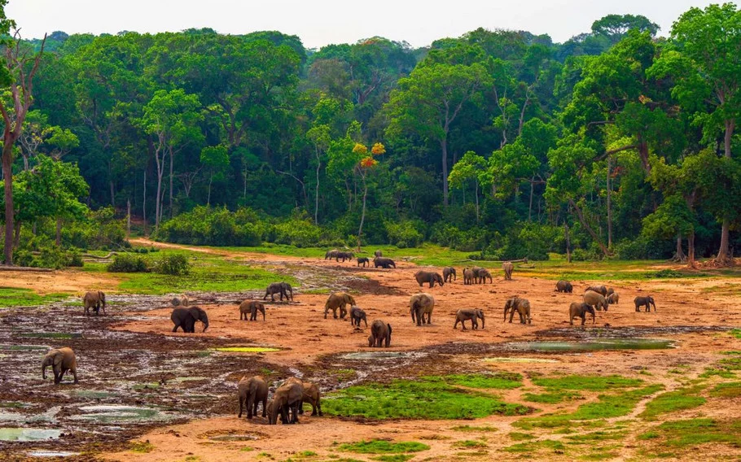
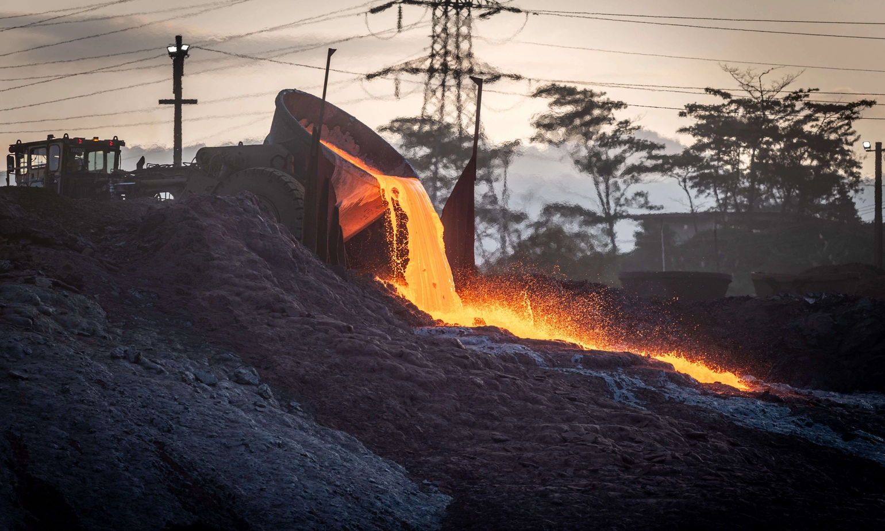

Le Bassin du Congo, l’un des derniers puits de carbone au monde, abrite une biodiversité indispensable pour le bien-être de la planète
Le Bassin du Congo, qui abrite la deuxième plus grande forêt tropicale au monde, juste derrière le bassin amazonien, est un mélange de rivières, forêts, prairies et marécages. Il est également réputé pour la richesse de sa biodiversité. Cependant, la région connait actuellement une recrudescence de la déforestation, de projets d’infrastructures et de l’exploitation de minéraux tels que le coltan, les diamants et l’or, qui ont un impact significatif sur l’environnement et la faune.
Le Bassin du Congo est habité et exploité par l’homme depuis plus de 50 000 ans. Il fournit de la nourriture, de l’eau et un abri à 75 millions de personnes. Riche en bois, pétrole et minéraux, il constitue un vaste puits de carbone d’importance mondiale qui régule le dioxyde de carbone (l’un des gaz à effet de serre). La forêt du bassin contrôle également les conditions météorologiques locales et régionales et facilite la circulation de sources essentielles d’eau pour une grande partie de l’Afrique.
L'éléphant de forêt, le gorille, le chimpanzé, l’okapi, le léopard, l’hippopotame, le buffle, et le lion figurent parmi les résidents les plus connus du bassin. Le Bassin du Congo s'étend sur le territoire de neuf pays (l’Angola, le Cameroun, la République centrafricaine, la République Démocratique du Congo, la République du Congo, le Burundi, le Rwanda, la Tanzanie, et la Zambie). Par ailleurs, six pays, dont la superficie forestière occupe une vaste partie de la région, sont souvent associés à la forêt tropicale du Congo : le Cameroun, la République centrafricaine, la République du Congo, la République Démocratique du Congo (RDC), la Guinée équatoriale et le Gabon. Selon le WWF (Fonds mondial pour la nature), le Bassin du Congo renferme plus de 10 000 variétés de plantes, dont 30 % d’espèces uniques à la région. Ses forêts abritent des animaux en voie de disparition, plus de 400 espèces de mammifères, et plus de 1 000 espèces d’oiseaux. Certaines exercent une influence significative sur les caractéristiques qui forment leur habitat forestier. Par exemple, les forêts d’Afrique centrale sont généralement peuplées d’arbres plus grands et d’une densité plus faible de petits arbres comparées aux forêts d’Amazonie et de Bornéo.

Une grande partie de la population, notamment les communautés autochtones, dépend du Bassin du Congo pour la nourriture, l’eau, et les matériaux nécessaires aux activités agricoles. Dans certaines régions de la RDC, du Cameroun et du Gabon, la crise économique a aggravé la situation. En raison de pressions économiques et de la pénurie d’emplois dans les zones urbaines, beaucoup de chômeurs retournent dans les forêts pour y chasser et gagner leur vie, exerçant davantage de pression sur la faune et les ressources naturelles.
D'après Greenpeace, depuis quelques années des investisseurs étrangers se sont empressés de tirer profit de la richesse des ressources naturelles de l’Afrique, par le biais de moyens souvent nuisibles aux populations locales et à l’environnement. De nombreuses entreprises achètent ou louent d’immenses terrains en Afrique pour l’extraction et l’exportation de ressources. Ce contrôle à grande échelle est appelé « accaparement des terres », en raison de la rapidité et du manque de transparence de certaines des transactions. Les Nations Unies considèrent que celles-ci limiteraient l’accès de la population à la nourriture, ralentiraient la croissance économique à long terme, et détruiraient d’importantes zones naturelles.

Des entreprises internationales sont en train de créer de grands domaines agricoles dans le Bassin du Congo, en vue d’y cultiver des plantes comme le palmier à huile et l’hévéa. Ces fermes sont souvent à l’origine d’une déforestation massive et entraînent des conflits avec les communautés locales. L’exploitation illégale et non durable des forêts dans le bassin nuit gravement à l’environnement et aux populations locales. L’abattage des arbres, à une vitesse alarmante, par de petites et grandes entreprises, conduit au déboisement et à la destruction d’habitats naturels, et rend la région plus vulnérable aux changements climatiques. Depuis des années, les arbres à bois spécieux sont abattus illégalement afin d’être transformés en meubles ou revêtement de sol. Aujourd’hui encore, du bois provenant d’abattage illégal dans le Bassin du Congo est exporté dans le monde entier, notamment aux États-Unis, aux pays de l’Union européenne, et de plus en plus à la Chine. Il existe aux États-Unis et dans l’UE des lois pour lutter contre l’importation de bois d’origine illégale (la loi américaine « Lacey » et le Règlement de l’UE sur le bois), lesquelles commencent à prendre effet et obligent les entreprises à vérifier l’origine de leur bois. Néanmoins, tant que la Chine pourra importer du bois illégal, le transformer en produits finis, et le vendre dans le monde entier, les entreprises continueront à abattre des arbres de manière illicite dans le Bassin du Congo.
Le Bassin du Congo est l’un des derniers puits de carbone au monde et abrite une biodiversité vitale pour la planète. Sa protection est donc cruciale, mais les besoins de certaines des communautés les plus pauvres au monde doivent aussi être pris en considération.
Pour beaucoup en RDC et en République du Congo, les industries comme celles du bois ou de l’extraction du coltan offrent de rares perspectives économiques. La difficulté consiste à trouver un moyen de sortir les populations de la pauvreté tout en préservant l’environnement. Cet équilibre est tout à fait possible en appliquant les bonnes politiques. Des projets tels que le Barrage Grand Inga, qui prévoit la construction de sept centrales hydroélectriques aux Chutes d’Inga dans la République Démocratique du Congo (RDC), devrait produire près de 40 gigawatts d’électricité, soit deux fois plus que le Barrage des Trois-Gorges en Chine, qui est actuellement le plus grand barrage hydroélectrique au monde. Les défenseurs du projet affirment qu’il permettra d'améliorer la fiabilité de l'électricité en Afrique, de créer des emplois et d'augmenter les revenus des ménages. Une bonne gestion du projet pourrait permettre à la RDC de devenir leader en matière d’énergie renouvelable. Une exploitation durable et éthique du coltan pourrait aussi stimuler l’économie sans pour autant détruire le bassin ; toutefois, l’industrie minière est actuellement confrontée à de multiples violations des droits humains, telles que le travail des enfants.
D’une manière plus générale, les responsables politiques devraient prendre en compte la biodiversité dans leurs décisions économiques, tout comme le préconise, dans son rapport de 2021, le professeur Partha Dasgupta de l’Université de Cambridge qui insiste sur le fait que si la nature n’est pas convenablement protégée, de graves conséquences économiques et environnementales pourraient s’ensuivre. Mais si le bassin est préservé, la population et l’économie prospèreront à long terme.
Selon un rapport du Centre de recherche forestière internationale (CIFOR), au moins 27 % des forêts vierges du Bassin du Congo recensées en 2020 disparaitront d’ici 2050, si leur déboisement et leur dégradation continuent d’échapper à toute régulation.
Selon des chercheurs, de meilleures politiques d’utilisation des terres, telles que la création de zones protégées, de concessions forestières et de forêts communautaires, aideraient à réduire le déboisement et la dégradation des forêts. D’après Pierre Ploton, du Centre français de coopération internationale en recherche agronomique pour le développement (CIRAD), ces stratégies protègent non seulement les forêts mais aussi soutiennent les communautés locales en les impliquant dans la conservation et en les aidant à répondre à leurs besoins quotidiens.
Des experts ont également précisé que l’Afrique centrale joue un rôle crucial dans la protection de la biodiversité, en raison de la richesse de son patrimoine naturel et de ses nombreuses espèces endémiques. Selon Richard Atvi, coordinateur régional de l’Afrique centrale au sein de CIFOR-ICRAF, les écosystèmes de la région constituent des ressources communes qui aujourd’hui soutiennent des millions de personnes, et doivent être protégées pour les générations à venir. Il souligne que la responsabilité de sa préservation incombe non seulement aux pays de l’Afrique centrale, mais aussi à la communauté internationale.